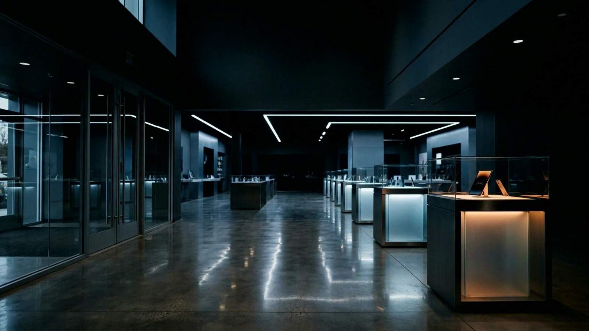
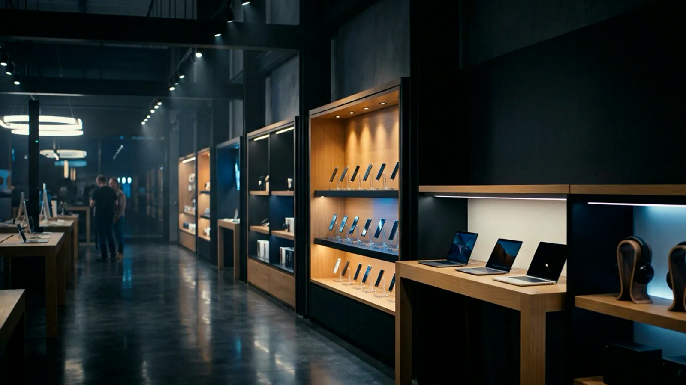
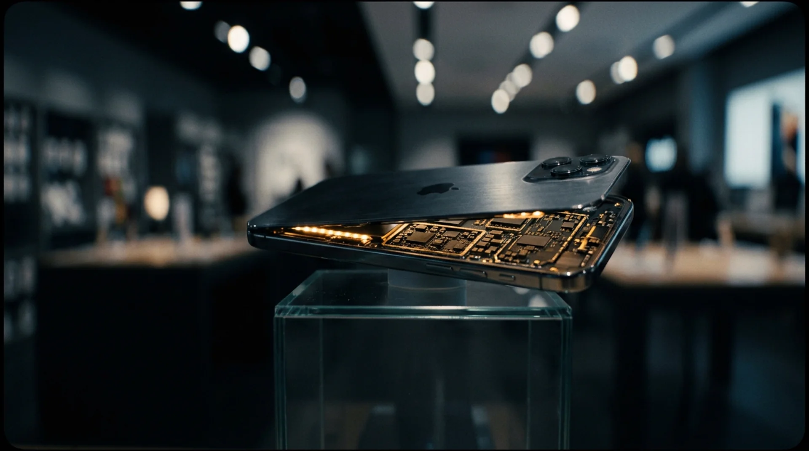
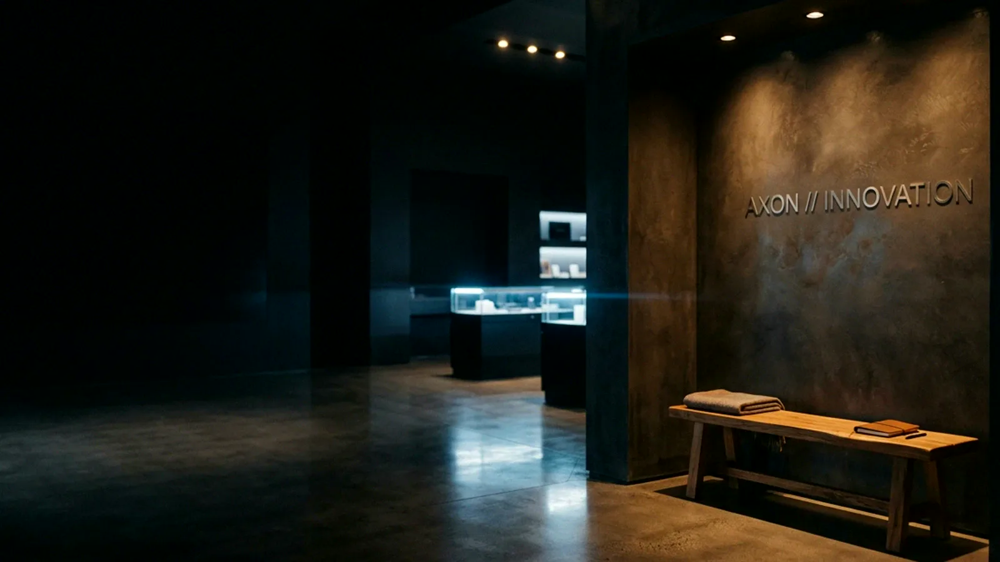
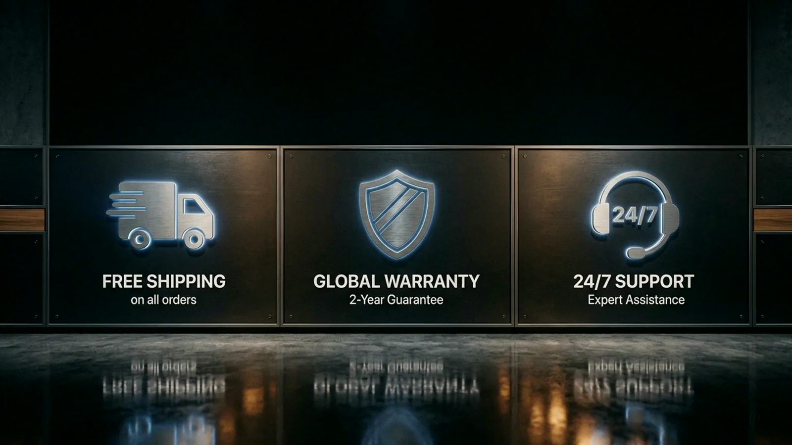
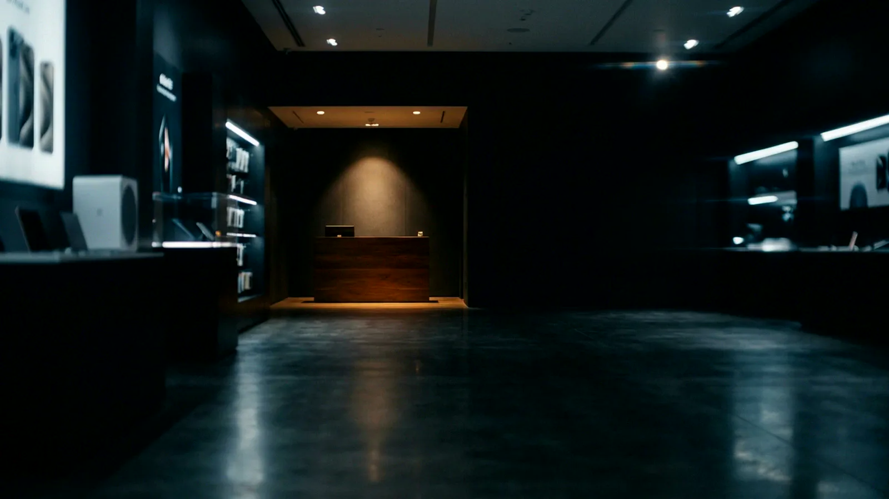

Technology, refined.
Premium devices, expert service, one destination. Walk the showroom.
Every category. One roof.
Phones. Laptops. Audio. Wearables. Each in its own zone, lit to be held.
Phones
Flagship to mid-range
Laptops
Work and creative
Audio
Studio to portable
See what powers it.
Every circuit. Every layer. The engineering you carry in your pocket, finally visible.
Built on trust.
Mobinet started as a single counter in 2018. Today, we are the destination for people who care about what they carry. No compromises, no filler inventory. Every device on our floor earned its place.
The promise.
Free shipping on all orders
2-year warranty, no questions
Expert support, always human
14-day returns